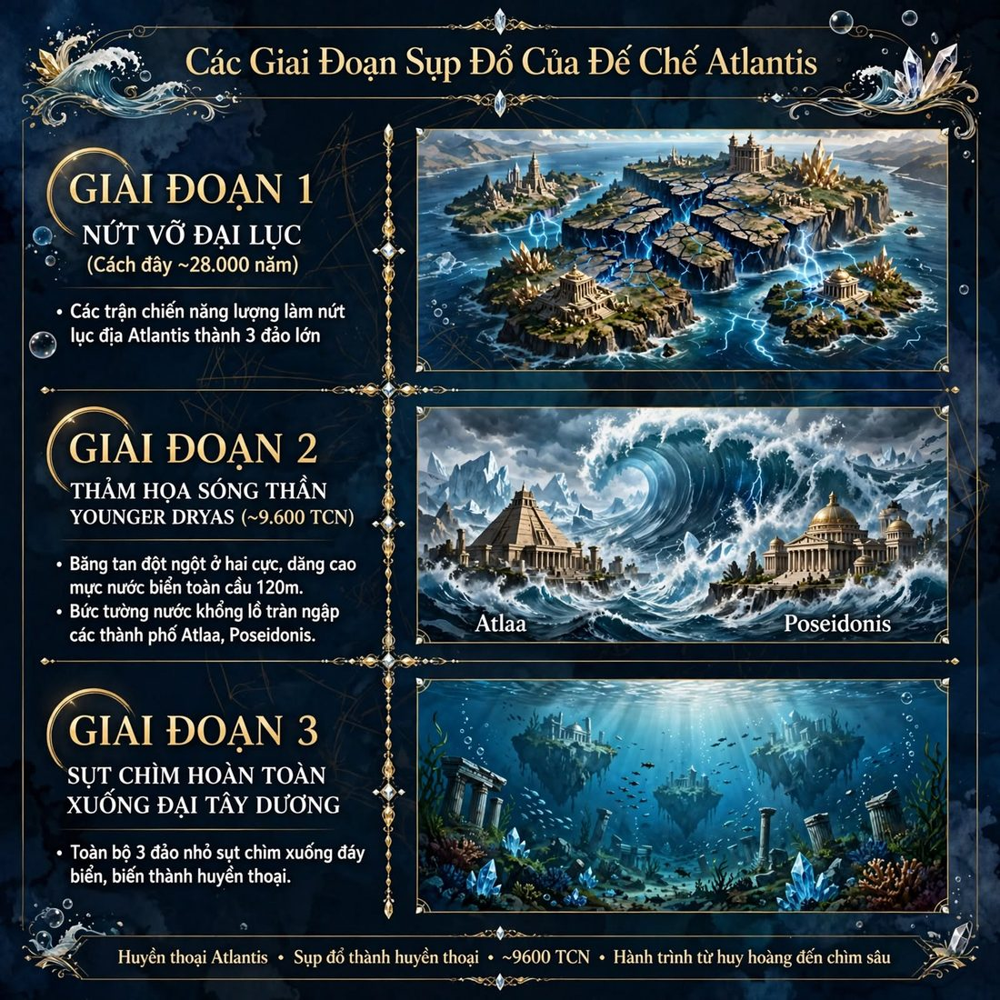
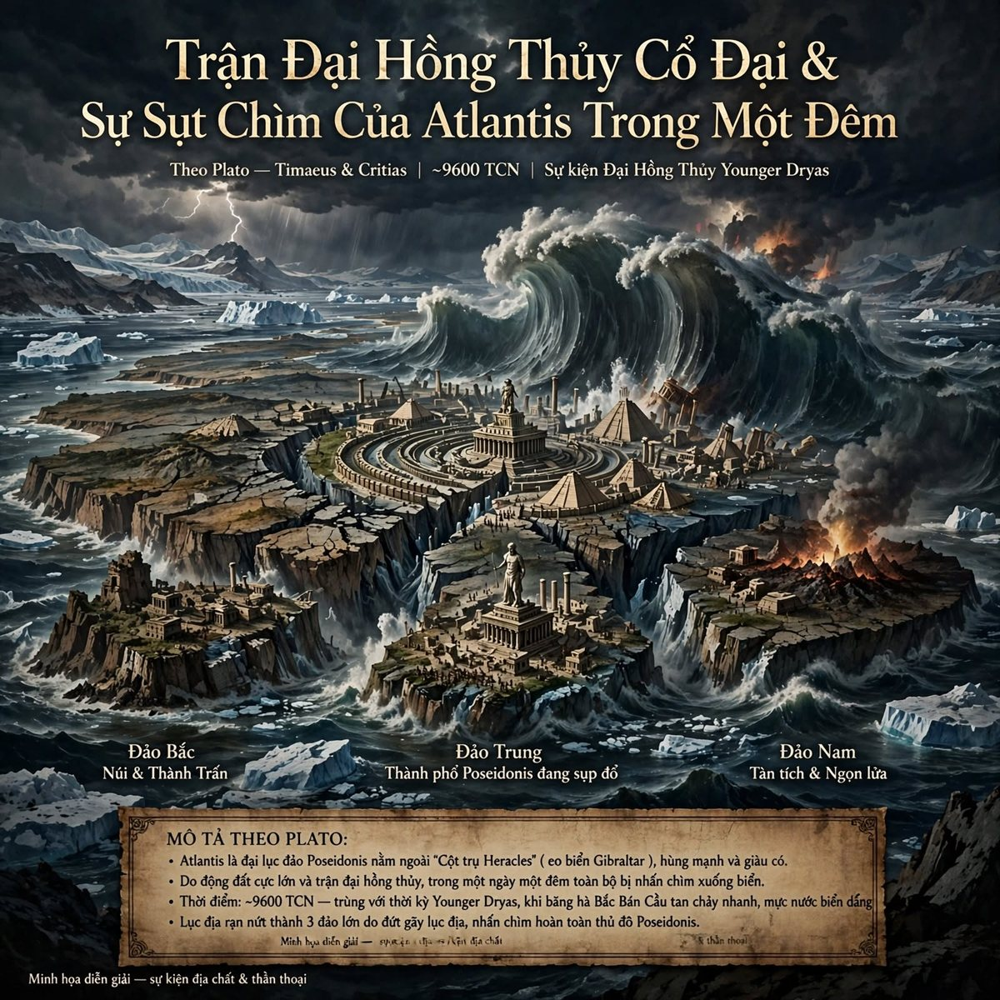
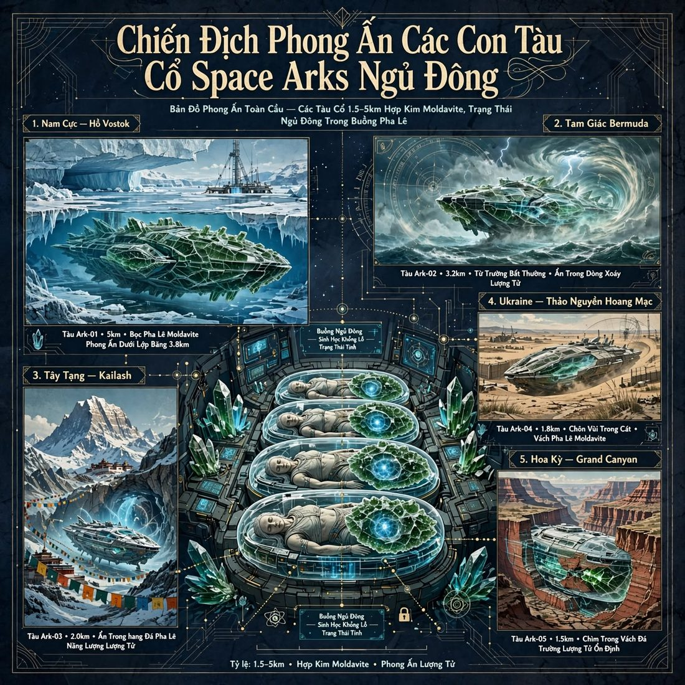
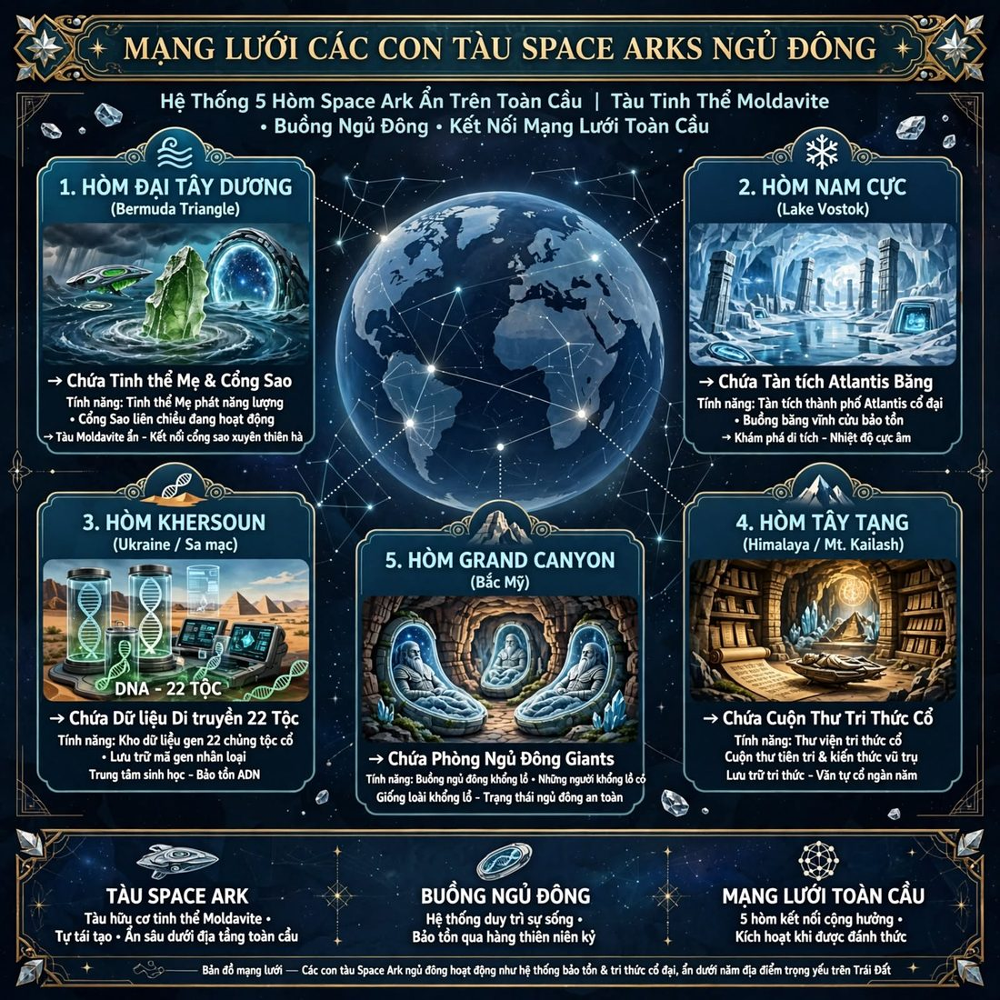
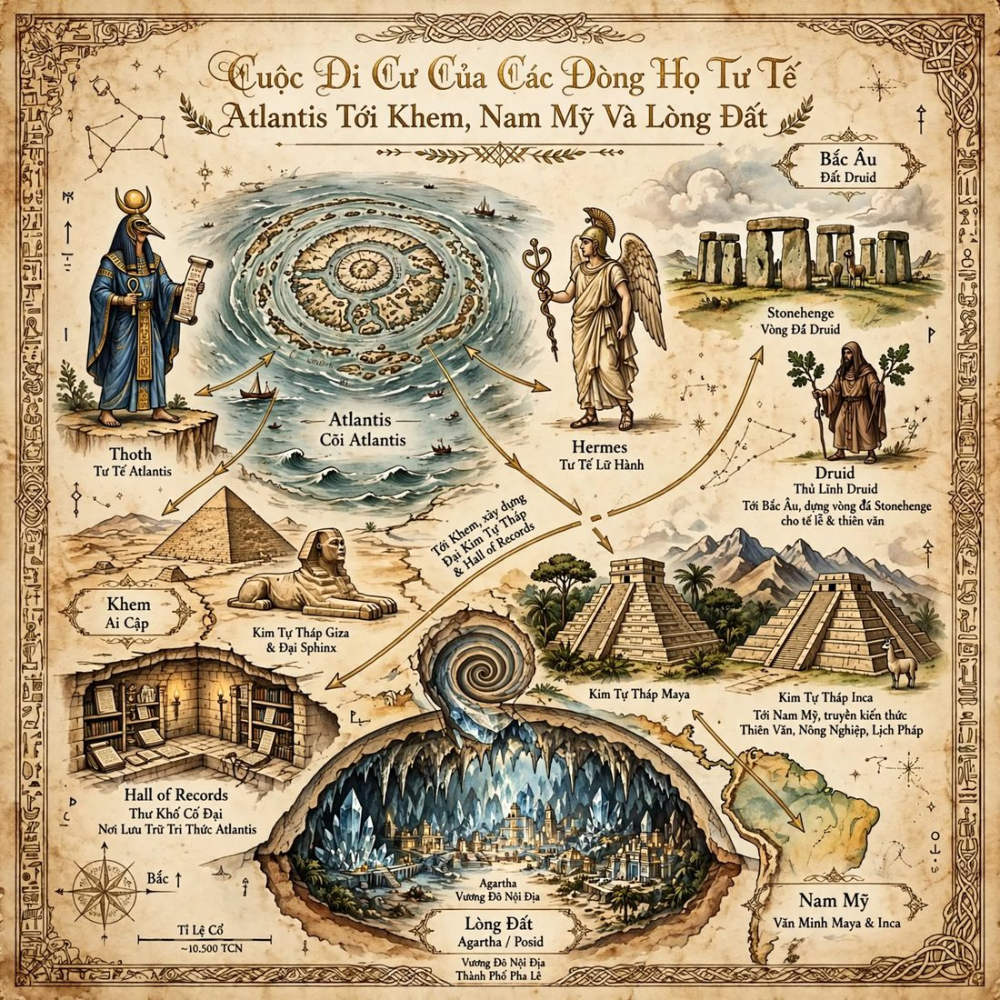
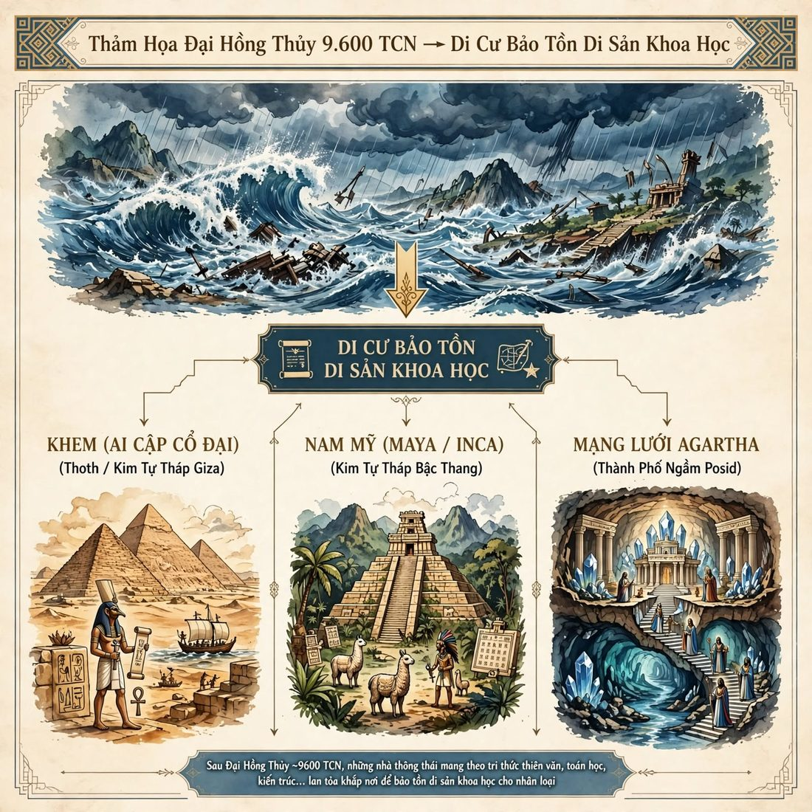
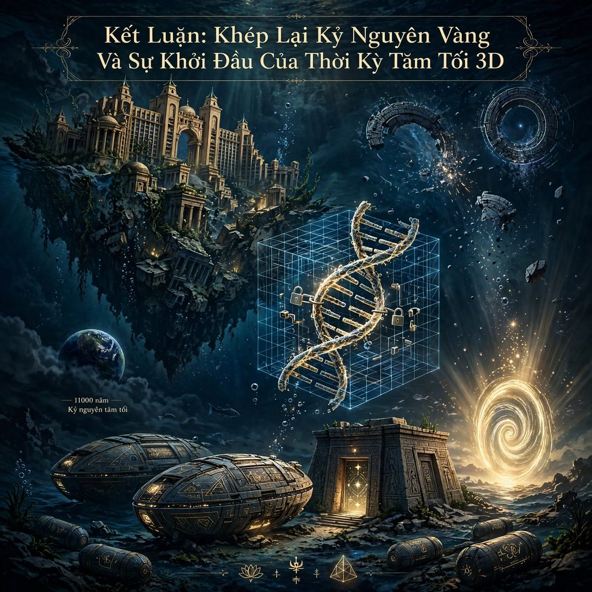

Trang chủ / Chuyên đề 10: Lịch Sử Bị Che Giấu & Nền Văn Minh Cổ Đại / Kỳ 94
Chuyên đề 10 · Kỳ 94 / 100
TRẬN ĐẠI HỒNG THỦY CỔ ĐẠI & SỰ SỤP ĐỔ CỦA ATLANTIS

1. Trận Đại Hồng Thủy 9.600 TCN Trong Ký Ức Nhân Loại

Khoảng 11.600 năm trước, toàn bộ đế chế Atlantis chìm xuống đáy Bắc Đại Tây Dương trong một biến cố được ghi lại trong mọi nền văn hóa nhân loại dưới cái tên "Trận Đại Hồng Thủy". Theo Plato (Timaeus & Critias), sự việc diễn ra chỉ trong "một ngày và một đêm", khi các tầng địa chất bị nứt gãy và nước biển dâng cao nuốt trọn lục địa.
Dưới góc nhìn exopolitics (Elena Danaan, Michael Salla, Swaruu), thảm họa này không phải là một biến cố địa chất tự nhiên đơn thuần. Đó là hệ quả tích hợp của ba yếu tố: sự mất kiểm soát của Tinh thể Mẹ Tu-Ey sau khi bị vũ khí hóa, xung lực từ một trận chiến thiên hà diễn ra trong Hệ Mặt Trời, và sự sụp đổ của lưới địa từ Trái Đất khi các Cổng Sao bị đóng lại.

2. Chiến Dịch Phong Ấn Các Con Tàu (Space Arks) Ngủ Đông


Trước khi lục địa chìm hoàn toàn, các tư tế Law of One thuộc phe Altea đã kích hoạt một chiến dịch khẩn cấp: phong ấn các con tàu Space Arks và các thiết bị Cổng Sao xuống lòng đất và đáy đại dương, nhằm bảo tồn công nghệ và tri thức cho tương lai hàng chục ngàn năm sau.
Các con tàu bị khóa bằng hệ thống mật mã tần số DNA và tâm thức thuần khiết. Chỉ những sinh mệnh sở hữu dải sóng não Gamma và mã gen 22 chủng tộc tương thích mới có thể đánh thức chúng. Sau đó, các Cổng Sao bị đóng lại, màng phong tỏa Van Allen được dựng lên, cắt đứt Trái Đất khỏi mạng lưới giao thương thiên hà.
3. Cuộc Di Cư Bảo Tồn: Khem, Nam Mỹ Và Lòng Đất
| Vùng Đất Di Cư | Dòng Họ Tư Tế / Lãnh Đạo | Di Sản Kiến Trúc & Tri Thức Bảo Tồn |
|---|---|---|
| Vùng Đất Khem (Ai Cập) | Thoth (Ningishzida / Hermes), Dòng dõi Naacals | Xây dựng Đại Kim Tự Tháp Giza, Tượng Nhân Sư & Hall of Records |
| Nam & Trung Mỹ (Mayan/Inca) | Dòng họ Ramay, Quetzalcoatl, Kukulcan | Kiến trúc Kim tự tháp bậc thang, Lịch Thiên văn, Mật mã Thời gian |
| Bắc Âu & Anh Quốc (Druid) | Tầng lớp Pheryllt, Tuatha Dé Danann | Xây dựng Vòng Đá Stonehenge, Tháp Âm Học, Tri thức Giả kim |
| Mạng Lưới Agartha (Nội Trái Đất) | Cư dân Posid, Tư tế Ánh sáng | Xây dựng các đô thị ngầm 5D, kết nối với thành phố Telos |


Hàng chục ngàn người Atlantis may mắn sống sót đã di cư theo ba hướng chính, mỗi hướng mang theo một phần di sản của nền văn minh đã mất:
- Khem (Ai Cập cổ đại): Nhóm do Thoth (Ningishzida) dẫn dắt, mang theo tri thức kiến trúc, thiên văn, y học và giả kim, trở thành hạt giống của nền văn minh Ai Cập.
- Nam Mỹ (Maya / Inca): Các nhóm tư tế di cư tới Trung và Nam Mỹ, mang theo hình học thiêng liêng của các kim tự tháp bậc thang và lịch thiên văn cổ đại.
- Mạng lưới Agartha: Một nhóm tinh hoa di cư xuống các thành phố ngầm (Posid, Telos) để duy trì dải tần số 5D cho tới ngày nay.
4. Hệ Quả: Kỷ Nguyên Tăm Tối 3D Và Sự Phong Tỏa DNA

Sự sụp đổ của Atlantis vào năm 9.600 TCN đánh dấu điểm khép lại của Kỷ Nguyên Vàng cổ đại trên Trái Đất. Trận Đại Hồng Thủy không chỉ dìm sâu các đô thị tinh thể rực rỡ xuống đáy biển, mà còn đẩy nhân loại bước vào một Thời Kỳ Tăm Tối Tâm Linh (Spiritual Dark Age) kéo dài suốt hơn 11.000 năm qua.
Khi các Cổng Sao bị ngắt kết nối, bộ gen 12 sợi DNA bị phong tỏa và ma trận 3D được dựng lên, con người Trái Đất dần quên đi nguồn gốc thiên hà rực rỡ của mình, chấp nhận cuộc sống ngắn ngủi trong sự khan hiếm và sợ hãi.
5. Kết Luận: Hạt Giống Tri Thức Chờ Ngày Nảy Mầm
Tuy nhiên, hạt giống tri thức Atlantis không hề mất đi. Mạng lưới các con tàu Space Arks đang ngủ yên dưới lòng đất và di sản Hall of Records tại Khem chính là "những viên pin thời gian" đang chờ ngày bùng nổ, sẵn sàng đưa nhân loại bước vào Kỷ nguyên Hoàn lương 5D rực rỡ.